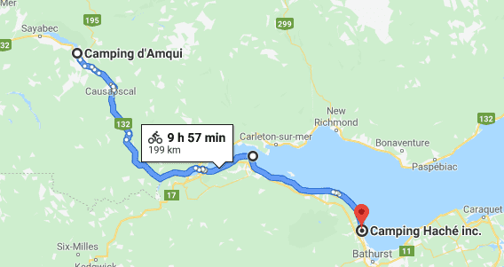

The forecast (like yesterday) was promising morning rain so I woke up at 630 and packed up early and warmed up at a McDonalds. I encountered a little bit of rain in the morning, but nothing major. I wanted to get back near the open water again!
I finally made it out of Quebec! In the case of exiting Ontario I was excited to finally get out while in the case of exiting Quebec I was excited to see a new province. The provinces ahead of me now were all small and so I would be completing them at a faster rate. The traffic was relatively busy, but unlike the coast of St Lawrence the side of the roads were empty like Northern Ontario (the scenery was also similar). On the river by the road leading out of Quebec there were lots of people fishing.
I made it to Campbellton, New Brunswick where I had lunch and waited for the rain to stop. Eventually, I biked out. The evening was calm and nice. At one point a dog chased me down the road as I was biking past someone's front yard. I panicked, my foot ended up in the wrong place and I thus almost flipped over my handlebar. There are a lot of dogs on the east coast not on a leash. I had a few such incidents.
In the evening, I met a guy met on a recumbent bike who is from France at Tim Hortons. People in the parking lot were checking his bike out a lot as it was really cool. He was very mysterious about himself but pleasant to talk to. Many people were like that. During the trip there were also a fair bit of seniors on an adventure and young people who were tired of their current work and needed a break. The French individual was waiting in town for a bike part to ship in as his bike had something broken. He mentioned a senior fella he met who has biked across Canada around 10 times using different routes and that he was in the area (I think I saw him setting up at a campground I was biking past earlier that day - I shouted hello but he didn't hear me). The individual from France was planning to eventually make it to the States after touring the east of Canada. I said I was planning to bike around PEI in a day but after we did the math I realized that my plan was not thought through and that PEI is bigger than I thought. He recommended I go to Fatima, but it was a little out of my way.
I arrived at the campground late at around 2130. The tenting area was empty - it was all for me to enjoy. I was very tired and cold. I had the feeling that I was close to catching a cold. In order to reverse this feeling, I spent some time in the bathroom of the campground where I had dinner. I took a long shower while I made hot tea right beside the shower cabin and then drank it while showering.
